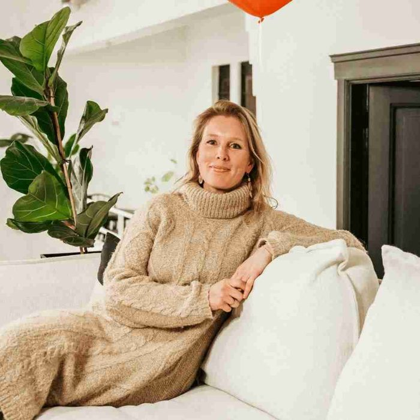
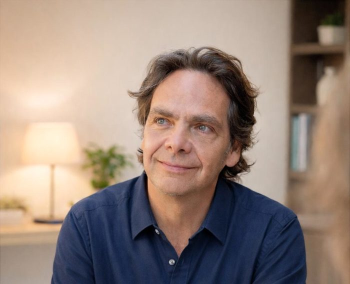
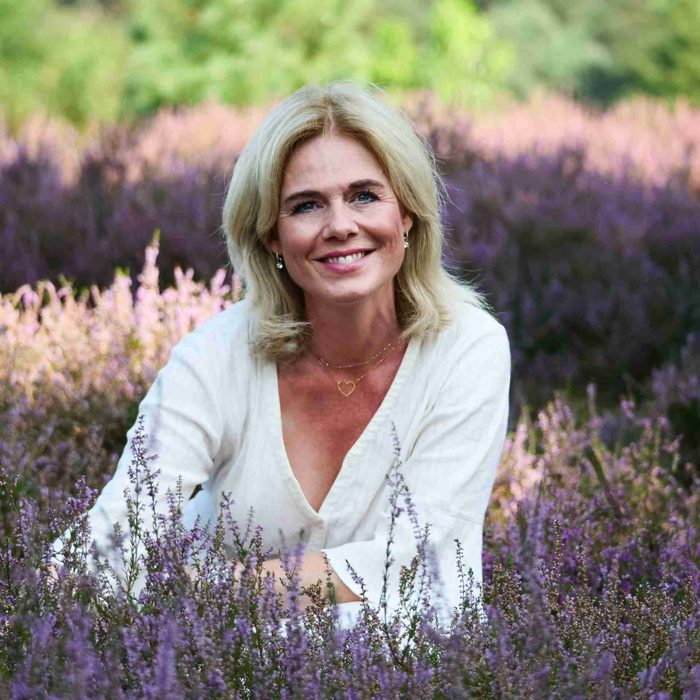

Echte mensen, bij jou in de buurt.
Ervaren begeleiders door heel Nederland. Met naam, gezicht en specialisme. Op locatie, online of wandelend. Werkt je organisatie met Dearly? Dan koppelen we je in het portaal aan een begeleider die bij je past.

Daniella Keijsers
Begeleider, Noord-BrabantProfieltekst volgt uit het bestaande profiel op dearly.nl.
Bekijk profiel
Marije Cox
Begeleider, Noord-BrabantProfieltekst volgt uit het bestaande profiel op dearly.nl.
Bekijk profiel
Coosje Wentink
Begeleider, Amsterdam en LimburgProfieltekst volgt uit het bestaande profiel op dearly.nl.
Bekijk profiel
Stephan van Velthoven
Begeleider, Zuid-HollandProfieltekst volgt uit het bestaande profiel op dearly.nl.
Bekijk profiel
Elke te Raaij
Begeleider, LimburgProfieltekst volgt uit het bestaande profiel op dearly.nl.
Bekijk profielEn nog ruim twintig anderen
Van Groningen tot LimburgAlle profielen staan op dearly.nl. In het portaal zie je wie bij jou in de buurt beschikbaar is.
Alle begeleidersTwee niveaus. Altijd de juiste match.
Hoe complexer het verlies, hoe meer ervaring nodig is. Bij de intake beoordelen we opleiding, ervaring en competenties.
Professional
- Begeleidt bij gezonde rouw en levend verlies, ook bij lichte psychische kwetsbaarheid.
- Relevante hbo-opleiding op psychosociaal gebied.
- Aantoonbare verdieping in verlies en rouw, en praktijkervaring.

Word begeleider bij Dearly
Business-lidmaatschap: €450 per jaar, ex btw, of €45 per maand. Na aanmelding volgt binnen vijf werkdagen een reactie en een kennismakingsgesprek.
- Inzet bij begeleidingstrajecten voor Dearly-klanten
- Kans op een plek in de trainerspool
- Eigen profielpagina op dearly.nl
- Netwerkevenementen, inclusief de zomer-bbq
- Je kennis delen in de kennisbank
- Nieuwsbrief over verlies en werk
Hoe word ik lid?
Vul het aanmeldformulier in. Je ontvangt het volledige formulier, dat de basis is voor het intakegesprek. Binnen vijf werkdagen bekijken we je aanmelding.
Welk niveau krijg ik?
Dat bepalen we samen tijdens de intake, op basis van opleiding, ervaring en competenties. Doorgroeien naar expert kan als je aan de criteria voldoet.
"Alleen ben je snel, samen kom je verder."
Remco Groenewegen, begeleider"Als verlies- en rouwprofessional voel ik mij helemaal thuis bij Dearly."
Jiska Rodenburg, begeleider"Een prachtig en professioneel initiatief om de toegankelijkheid van gespecialiseerde coaching te vergroten."
Daniella Keijsers, begeleider